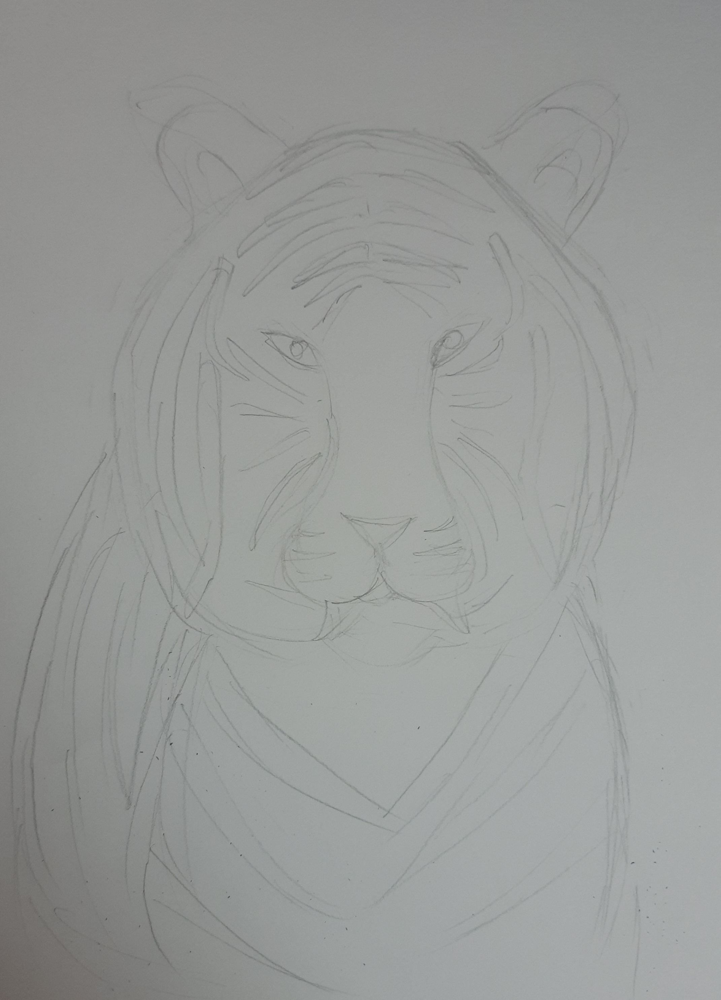
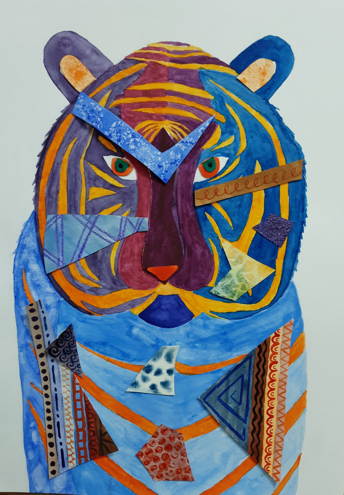
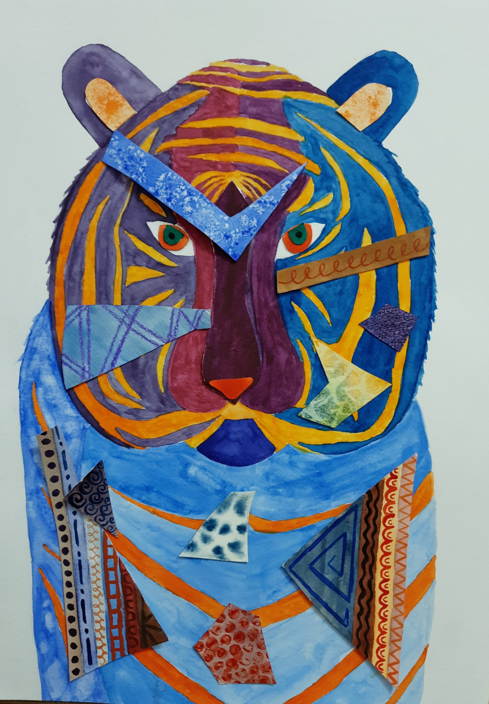
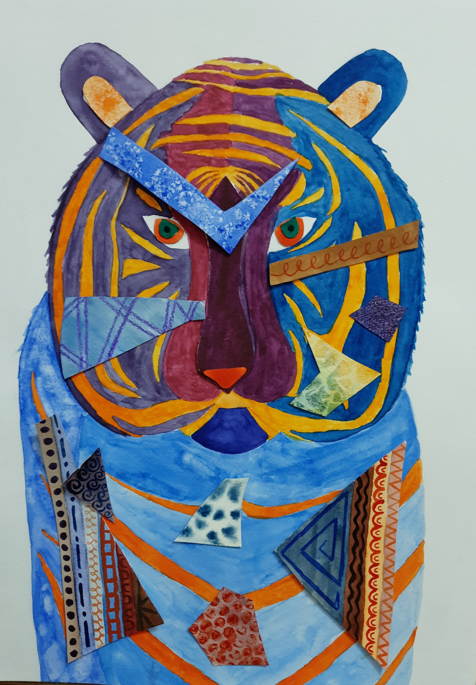

For this assignment, we had to made an abstract watercolor montage using several watercolor techniques we had learned in class and controlled patterns. A montage is an assembly of sections that are pieced to each other in some way to create a whole artwork.
Steps
Step 1 : After finding inspiration and ideas, I settled on painting a tiger for my montage. I first drew a sketch so that I had a plan on where to do each watercolor technique and controlled pattern. I also chose the split-complimetary color scheme of orange, purple and blue. After my sketch and plan, I drew a tiger on an A3 watercolor paper using a reference image.

Step 2 : To make sure my shape cutouts fit perfectly on the tiger, I put tracing paper on top of my tiger and drew all the shapes I wanted. Then I put the tracing paper on a sheet of watercolor paper and retraced the shapes with force so that the outlines of the shapes could be seen on the watercolor paper. Then I cutout the shapes and painted them with a pattern or watercolor technique following my plan.
Step 3 : Then I painted the tiger. This part was the most nervewracking because I hadn't planned where to put the colors and therefore I had to do this spontaneously. This meant that if my spontaneous thinking wasn't smart, I could end up having too much blue and purple next to each other with no orange or have cutouts on top of areas with the same color as the cutout - all of which are potential disasters. Thankfully, the colors came together quite well.

Step 4 : Lastly, I just glued all the cutouts onto the tiger. I decided that I did not want a background since it would be too cluttered and therefore I cutout the artowork to the shape of the tiger.
Reflection
Some things that went well in this artwork were the small pieces with the watercolor techniques and the patterns. Although I wasn't required to do many of them, I decided to try my best which resulted in some amazing details on the tiger. Some thing that I can improve is my skills of painting uniformly with watercolor. Although I tried my very best, the blue parts of the body of the tiger turned out very messy looking and uneven. Next time I will watch youtube videos to help me how to improve in this aspect and I will also pratice a lot before painting on my final artwork. I faced a large amount of failure whil painting the blue of the left side of the tiger. Although I spent a lot of time on it, there came a point where the paper became too wet for me to keeping painting over it and removing the paint with water. I dealt with this in a rather brilliant way. Since I was using tissues to dab away the paint to paint over it, I decided to simply try the tissue blot watercolor technique there and left it that way.
.png)


 
